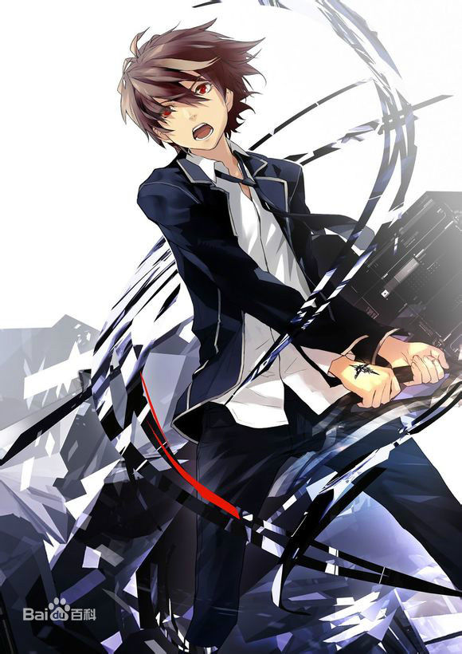
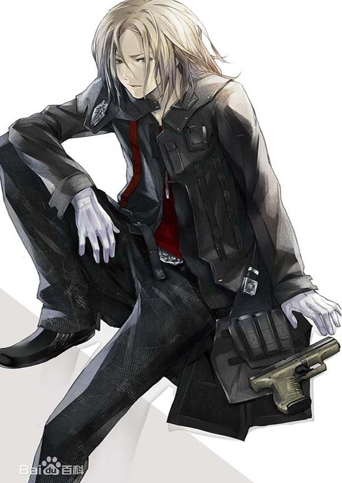
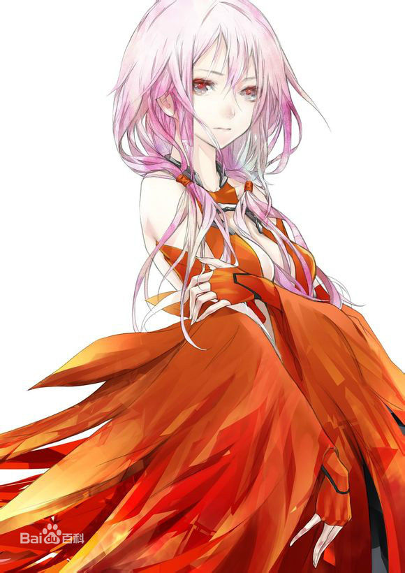

樱满集
（おうま しゅう/ OUMA SHU）本作男主角之一。于天王州第一高校就读的17岁少年。为人平凡而不温不火，对任何人、任何事似乎都希望保持距离。 意外中打碎了祈保护的装有虚空基因组的试管，获得了可以从人身体中抽出虚空（void）的能力（王的能力）并成为涯的战力，但对此感到迷茫。 在六本木地下，伪启示录开启，真名的另外一部分灵魂注入祈体内的仪式开始。之后，包括学校在内的一大片东京地区重新被封锁，在原会长供奉院亚里沙无法稳定众人情绪的情况下为了阻止内乱挺身而出成为天王州第一高校新一届学生会长，然而内心依旧混乱和迷茫。后来因祭为了救自己牺牲黑化，发挥出强大的实力并决意放弃温柔。但其实只是为拯救大多数人的不得已做法且并未被多数人理解。因补给不足在天王州高校内被迫实行“虚空等级制”这一铁血政策，力求尽快将众人带出困境，却因旁人无法理解而相继遭到背叛。在带领众人突破GHQ“Ghost”防御部团后被包围。 17话中被复活的涯斩断右手，夺走了“虚空基因组”，祈为了保护他被涯抓住并自愿成为复活真名的祭品。集经历牺牲、背叛、失去之后，最终正视了自己无法逃离的命运，利用春夏带来的第三支虚空基因组重获力量。 19话中因祈为了自己的黑化而决定战斗，注射第三只试管并重新获得能力。 21话中进入24区与达特战斗时，利用多个虚空融合制成的武器打败death。 22话中拒绝了病毒女王化真名的“请求”，得到祈遗留的力量的帮助打败了涯，病毒女王的人格随之崩溃。但由于祈的身体被虚空病毒侵蚀过于严重无法拯救，决定与祈一同赴死。集把手伸向天空，手上浮现出从未出现过的刻印，吸收世间所有的病毒，自身意识进入到虚空营造的空间中并于祈相拥。祈在集不知情的情况下让他接收自己的生命线得到了祈的生命，最终存活下来。 22话末，失明的集带上耳机（在祈让集接收自己的生命线时，祈当时已经失明就是那个时候集也就随之失明。最后集出现时所使用的导盲杖是证据之一），听着祈以前唱的歌，想像自己与祈相拥。旁边的大屏幕上祈的mv还在播放，只是祈已不在。 Void：包容一切（可储存他人的Void并为己用，也可以接受病毒。）
恙神涯
（つつがみ がい/ TSUTSUGAMI GAI）本作男主角之一。率领着立志从联合国对日本的控制中独立的反抗组织，葬仪社的年轻首领。虽然与集都是17岁，但却是拥有能够率领众人的人格魅力的少年。引导着拥有罪恶王冠之能力的集迈向王之路。十年中真名是指引涯前进的原动力，恙神涯曾经说过“我所做的一切，都是为了亲手拥抱一个女人”。幼年是茎道修一郎的实验体，逃脱不慎掉入海中为真名所救，故与集二人是青梅竹马，（也解释了为什么第一集就认识集）。体内的病毒需要楪祈进行定时输血以抑制。为了抗战大业与日本财团供奉院主动接触并得到亚里沙的倾心。在第二次【Lost Christmas】为拯救集被守墓人达特（Death）重创，吐露自己一直非常羡慕小时候勇敢无畏的集，帮助其找回记忆。12话在六本木地下的战斗中，为救集和祈与暴走状态的真名同归于尽。18话被茎道等人复活，表现与从前判若两人，不仅在供奉院亚里沙、难波大秀等人发动了学生叛乱之际，斩断集的右手抢走了王的力量。20话向外界发表宣言要发动最后一次【Lost Christmas】。21话抹消了祈的记忆，使被病毒化的真名借着她的身体复活。22话与集战斗，被集击败后终于吐露出自己的真实目的只是为了用自己的死亡从另一个途径解救真名的灵魂，阻止世界的毁灭。最终与真名相拥而逝。涯一方面憧憬着集，想要保护集，可是由于深爱着真名，又恐惧被淘汰，对集对一定程度的敌意，最后涯还是决定拯救真名，保护集。小说中幼小的真名出现，告诉涯是她所信赖的骑士，与幼小的真名相拥而逝。Void：击出虚空枪（复活后可强制取出他人的虚空并糅合成一切毁灭性武器）
楪祈
（ゆずりは いのり/ YUZURIHA INORI先译INORY）本作女主角。不仅是网络偶像egoist乐队的主唱，同时也是反抗组织葬仪社的一员。原是谜一样的三无少女，对集来说是憧憬的存在，与真名存在着密不可分的联系，血液和歌声拥有抑制病变的效果。后被证实是为了复活真名以真名的虚空和基因练成的人造人（容器），却在和集的接触中被集的温柔中的坚毅所打动，渐渐领会到爱情的滋味。她亦是集众叛亲离的时候唯一仍坚守在其身旁的人。21话中被涯消除了记忆，病毒化真名通过祈的身体复活。记忆慢慢失去时，即使忘却了自己，忘却了深爱的人，也还在歌唱，并把歌声传递给集，引领集来到涯的面前。22话中遗留下来的眼泪中的力量帮助集打倒涯，在真名崩溃后重获身体，但自身失明并被病毒严重侵蚀，集决定和她一起走（死）在集接收一切罪恶（病毒和Void）后，让集接收了自己的生命线。从而祈活在集心中的理想乡，二人相拥结尾。Void：暗蓝色巨剑。